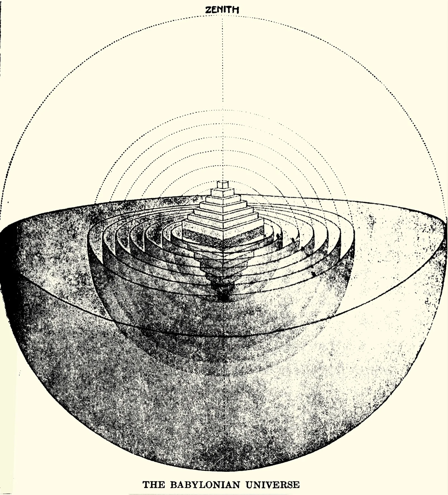
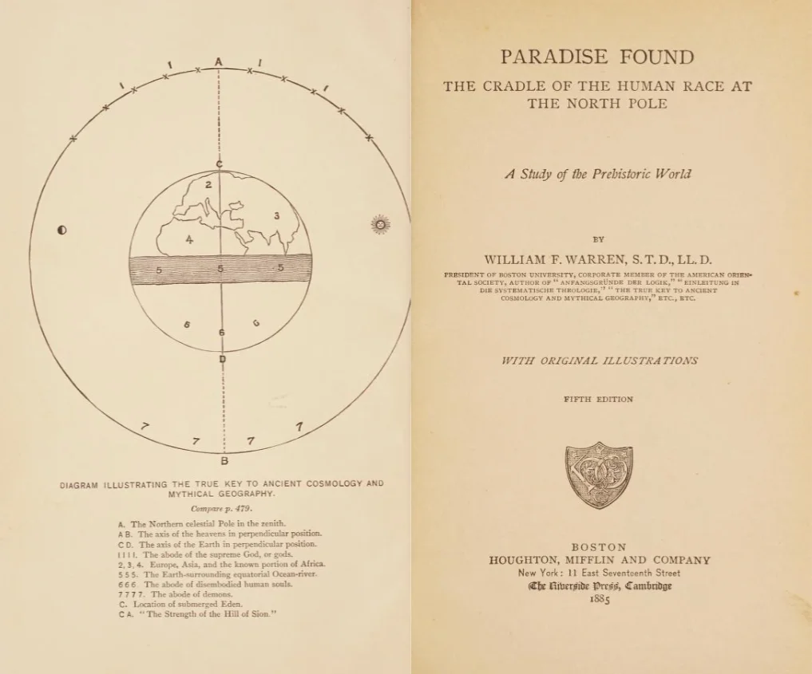

The book opens with a confession disguised as a thesis. William Fairfield Warren, president of Boston University, ordained Methodist minister, respected academic, announces on page one that the Garden of Eden was a real place. Not a metaphor. Not a parable dressed in geography. A place you could, in theory, walk to. And it sat at the North Pole.
The year was 1885. Darwin had been dead for three. The age of the Earth was stretching into millions of years, and the old biblical chronologies were crumbling. Into this landscape Warren dropped Paradise Found: The Cradle of the Human Race at the North Pole, a work of five hundred pages, fourteen chapters, and roughly a thousand footnotes. It went through multiple editions.
Something about it stuck.
Five hundred pages of conviction
Warren's method was comparative mythology on an industrial scale. He ransacked the Rig Veda, the Avesta, Norse cosmogony, Egyptian creation texts, Greek legends of Hyperborea, and the Book of Genesis. Wherever two traditions agreed on a detail, he treated the overlap as evidence. The logic ran like this: if multiple ancient peoples remembered a paradise of perpetual light, and if the only place on Earth with months of unbroken daylight is the Arctic, then paradise must have been polar.
The reasoning has a certain geometric neatness. It also collapses under the slightest pressure. Warren never paused to consider that perpetual light might simply be a universal symbol for divine favour. He treated myth as garbled geography, every legend a corrupted travel report filed by ancestors too primitive to keep proper notes.

But the book is not stupid. That is what makes it interesting. Warren wrote clearly, argued systematically, and cited sources that most of his critics had never read. He knew Sanskrit. He could quote Zoroastrian scripture from memory. The footnotes alone represent years of reading in languages that would stump a modern graduate seminar. If conviction were scholarship, Paradise Found would be a masterpiece.
Conviction, of course, is not scholarship. Warren decided his conclusion first and built the evidence around it, brick by careful brick. Every culture's flood myth confirmed a polar deluge. Every solar deity pointed north. When a source contradicted his thesis, he read it as a distortion introduced by later redactors. The method was circular, but the circle was drawn with such precision that it could pass, at a distance, for rigour.
The hypothesis to which we are thus conducted is simply this: that the cradle of the human race was at the North Pole, in a country submerged at the time of the Deluge.
William Fairfield Warren, Paradise Found (1885)
The pull of the pole
Warren was not operating in a vacuum. The Arctic had a grip on the Victorian imagination that is hard to reconstruct today. Franklin's lost expedition was still recent memory. Nansen would not reach his farthest north until 1895. The pole was blank space on the map, and blank space invites projection. If you needed to put paradise somewhere that no living person had visited, the top of the world was as good as anywhere.
Mercator had felt the same pull three centuries earlier. His 1595 map of the Arctic shows four great islands arranged symmetrically around a central whirlpool, with a magnetic rock at the exact pole. The map is gorgeous and entirely fictional. Mercator based it on a lost fourteenth-century travel account that was itself probably invented. But the image of a hidden, ordered world at the crown of the globe had staying power. Warren cited Mercator. He cited everyone.

The book sold well enough to earn a second edition and translations into several languages. Scientists dismissed it. Theologians were polite but unconvinced. The popular press found it entertaining. Warren did not seem troubled. He had already moved on to his next project: mapping the universe of Paradise Lost, turning Milton's poetry into architectural drawings. That work would occupy him for the next three decades, and it shared the same fundamental impulse. Warren believed that if you read carefully enough, you could extract solid ground from language. You could pin metaphor to coordinates.
He was wrong about Eden, and probably wrong about Milton. But the confidence is the thing. Victorian scholarship produced dozens of figures like Warren, men (always men) who believed that total knowledge was within reach, that enough footnotes could solve any question, that the world was a puzzle waiting for the right key. They built elaborate systems and defended them with genuine learning. The systems collapsed. The learning remains.
Paradise Found sits on a shelf between science and fantasy, too rigorous for one, too earnest for the other. It is the work of a man who read everything and concluded exactly what he wanted to conclude. There is something almost admirable in that. Almost.